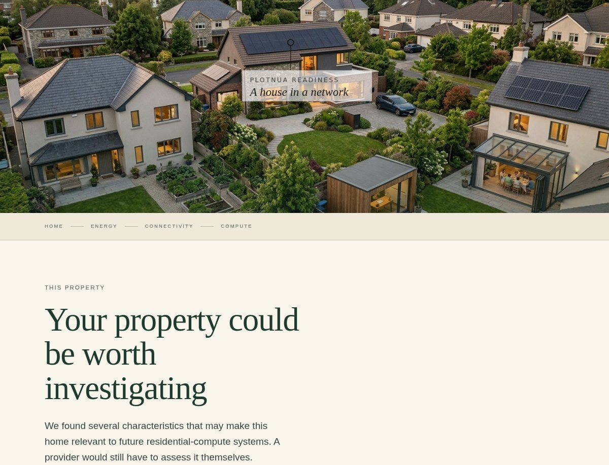
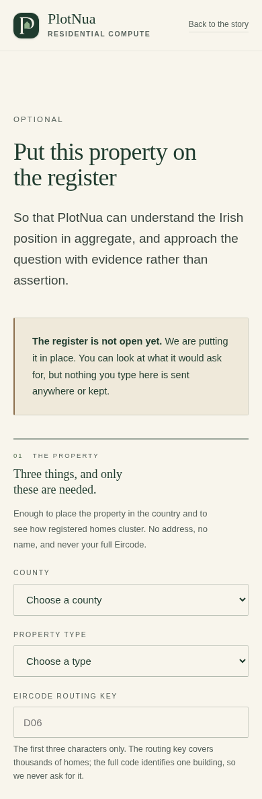
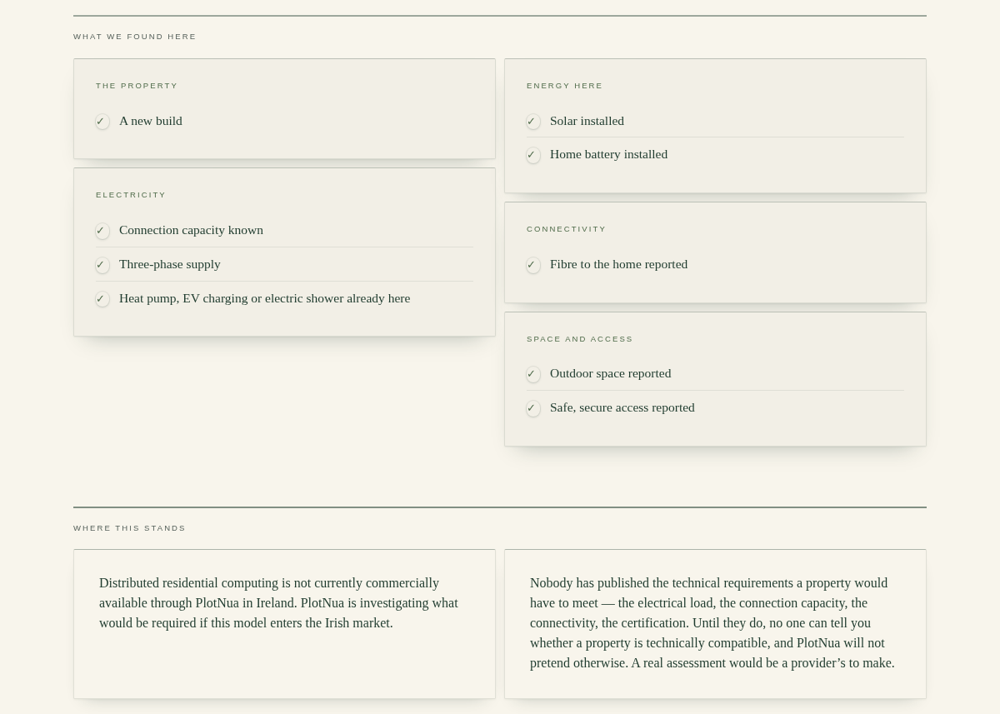
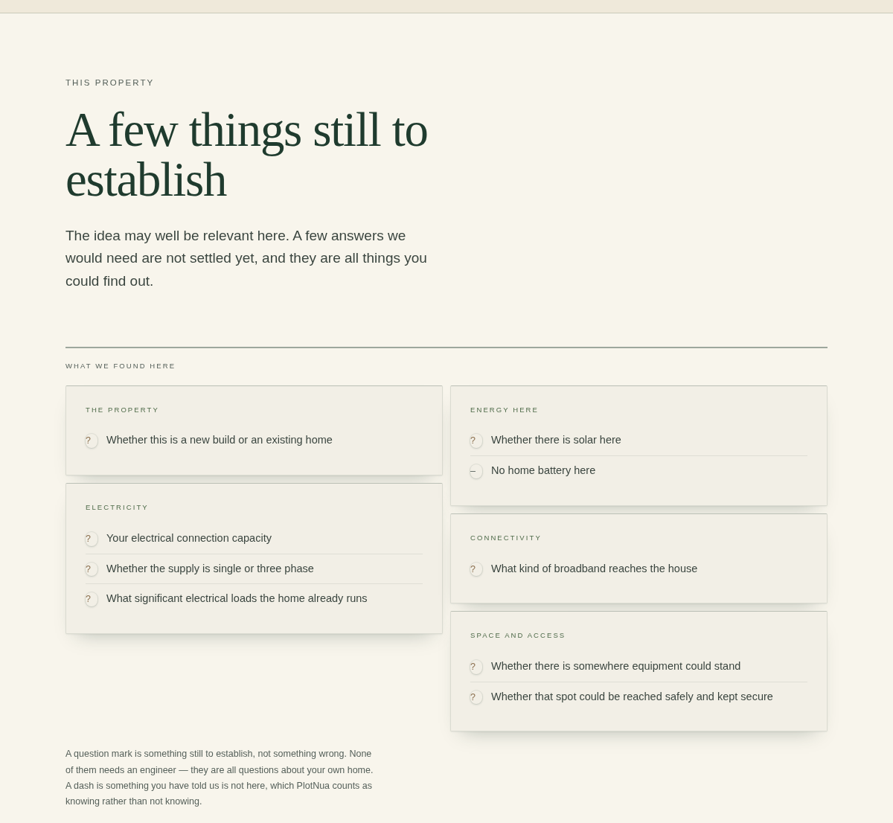

Residential compute in Irish homes
PlotNua has built an early residential compute readiness check for Irish homeowners. This private note shows SPAN what we’ve built, what we’re learning about the Irish market, and where there may be an opportunity to work together.
PlotNua does the homework. The homeowner makes the decision.
Most Irish homeowners don’t know what their property could become. Each possibility on PlotNua is a Discovery — an article on what is actually happening — followed by a Property Check that reads the homeowner’s own answers against the evidence we hold.
- 930 Products across 193 organisations
- 8,199 Structured product facts recorded against 82 defined features
- 722 Pricing records 552 of them verified
- 963 Evidence sources plus 379 availability records
Every fact carries its source and the date it was read. There are 10 Discoveries and 8 Property Checks live on the site today. The readiness check below is the ninth.
XFRA starts at the house.
Compute nodes in homes, with a SPAN Panel and a battery. The first proof of concept is 100 US new-construction homes, with broader expansion planned from 2027. XFRA is currently available only in the United States.
Ireland is small, well connected and, as far as we can establish, this model has not yet been developed here.
A residential compute readiness check, live on plotnua.ie.
Eleven questions about the property, the electricity supply, the energy already there, connectivity, and physical space and access. It names no provider anywhere a homeowner can read.


A readiness check, not a technical verdict
Until the technical requirements are known, it wouldn’t be credible to tell someone how suitable their home is. So we ask about the things that may matter and show them what we know, what we don’t know yet, and what a provider would need to confirm.
What the homeowner sees
What is already known about the property, separated from the questions that are still open. Some homes may be worth exploring further; others need more information first.
Every result says that residential compute isn’t available through PlotNua in Ireland, and that the technical requirements haven’t been established.


- DiscoveryAn article on what is happening in this category, with sources.
- Homeowner educationEleven plain questions, where “I don’t know” is always an answer.
- Preliminary screeningThree possible outcomes. Nothing is ruled out because someone rents.
- Evidence gapsEvery unknown is named and given back to the homeowner.
- Interest captureAn optional register. Eircode routing key only, never the full code.
- Geographic aggregationCounts by county and routing key, with any cell below five suppressed.
- Provider technical qualificationNot built, until the requirements below exist.
An aggregate picture of the Irish side.
Given a population, the register would show how many properties report fibre, solar or a battery, a known connection capacity or three-phase supply, how they cluster by county, and which questions homeowners can’t answer.
The register is not yet open.
Why Ireland is worth a look.
At Q2 2026 ComReg reports fibre to the premises available at 87% of Irish premises, every county at or above 80%, and gigabit broadband at 92%.
ESB Networks offers a standard domestic connection of 12 kVA, with 16 kVA, 20 kVA and 29 kVA available, 29 kVA being the upper limit of domestic MIC. Smart meters and half-hourly tariffs are in the market.
These are national figures. They say nothing about any individual property.
What would turn screening into qualification.
These are the numbers we don’t have. No expectation of an answer today.
- Compute nodes in residential and small-commercial locations
- SPAN Panel and battery required
- 100-home US new-construction proof of concept
- Broader expansion planned from 2027
- Not currently available outside the US
- Host compensation exists; no amount published
- Continuous electrical load, in kW
- Maximum electrical load, in kW
- 230V / 50Hz compatibility
- Minimum connection capacity, against Ireland’s 12–29 kVA domestic range
- Whether three phase is required
- Minimum bandwidth, and minimum upload
- Maximum tolerable latency
- Physical dimensions and siting clearances
- European certification and conformity route
- Deployment model outside new-build communities, if any
- Any European timetable
With those numbers, the list on the right becomes a filter.
Could an Irish readiness check be useful to you?
If it would, the right person is probably whoever holds XFRA market development. If it would not, that is useful to know too.
hello@plotnua.ie- PlotNua figures — read from the Atlas base on 24 September 2026. Discovery and Property Check counts are countable on plotnua.ie.
- Irish broadband — ComReg, Q2 2026. Irish connection capacity — ESB Networks, 2026.
- XFRA — SPAN’s own support material, read 24 September 2026.
This page is private and unlisted. It is not indexed, not in the sitemap and not linked from plotnua.ie. PlotNua has no relationship with SPAN and has had no contact before this note.